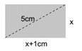
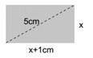

Matemática: Función Cuadrática
Comprobamos lo aprendido
Problema 7
A) Calculen el valor de los lados de la siguiente figura si su Area es igual a 20 cm2

Obra publicada con Licencia Creative Commons Reconocimiento Compartir igual 4.0
Problema 7
A) Calculen el valor de los lados de la siguiente figura si su Area es igual a 20 cm2

Obra publicada con Licencia Creative Commons Reconocimiento Compartir igual 4.0